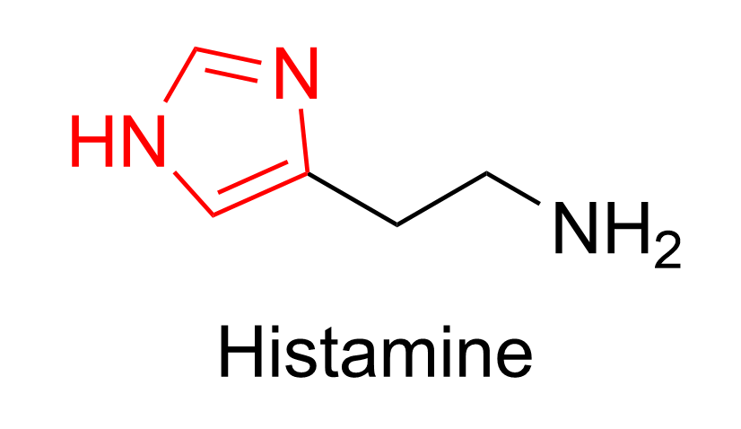

Structure & Prototropic Equilibria
Understanding tautomers and conformations of histamine
Ionization of Histamine
Histamine has two basic nitrogen atoms. At low pHacidic conditions, both nitrogens are protonated, giving histamine a dicationic form+2 charge. As the pH increases to physiological levelspH ~7.4, the nitrogen within the ring that closer to the chain tends to lose a proton while the amino group remains protonated, resulting in a monocationic form+1 charge, which is the predominant species in the body. In high pHbasic conditions, both nitrogens lose their protons, forming a neutraluncharged molecule.
Prototropic Equilibrium of Histamine
The activity of histamine is mainly determined by its molecular structure and the equilibria between its tautomeric and conformational forms. The histamine molecule contains an imidazole ring, which can exist in tautomeric forms due to proton exchange between nitrogen atoms. These tautomers influence histamine's ability to interact with its receptors, such as H₁ and H₂ receptorsH1 receptors is mainly located on smooth muscles for allergic responses, H2 receptors mainly located in the stomach for gastric acid regulation. [9].
Histamine exists in two tautomeric forms:
- Tautomer I (N-τ-H-histamine): The nitrogen far from the side chain has the hydrogen
- Tautomer II (N-π-H-histamine): The nitrogen close to the side chain has the hydrogen
Key Finding: 4-Substituted histamines display different tautomer concentrations when compared to the native molecule.
Conformation of 4-Substituted Histamine
Conformer I
NOT favored due to large steric interaction between Me and the side chain
Conformer II

Preferred conformation with less steric hindrance
Key Observation
The selectivity observed for 4-methylhistamine indicated that:
Conformer I is required for H₁ receptor binding, while Conformer II is required for H₂ receptor binding.